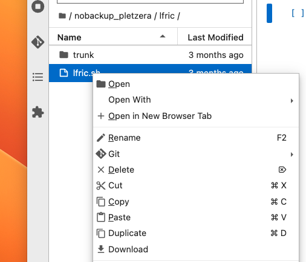
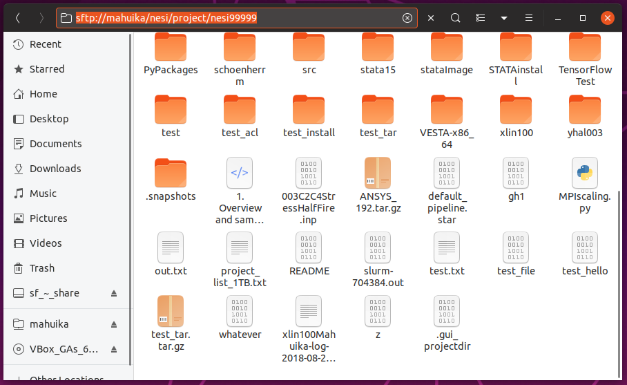
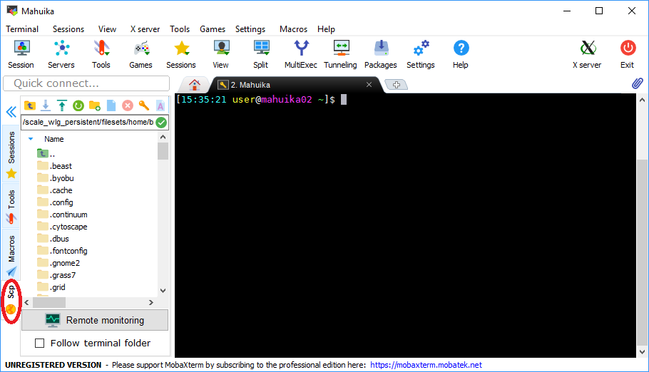

Moving files to and from the cluster
Prerequisite
Have an active account and project.
Find more information on the different types of directories here.
Using the Jupyter interface¶
Many users have found the Jupyter interface very useful for running code on NeSI. The Jupyter interface only requires a web browser; the instructions are same whether your are connecting from a Windows, Mac or a Linux computer.
To upload a file, click on the
button, near the top left and generally under the Run button.
To download a file, navigate the file browser on the left and right-click on the file to see the menu below,

The Download button is at the bottom.
Standard Terminal¶
Prerequisite
Have SSH configured as recommended
In a local terminal the following commands can be used to:
Move a file from your local machine to Mahuika.
scp <path/filename> mahuika:<path/filename>
Move a file from Mahuika to your local machine.
scp mahuika:<path/filename> <path/filename>
Note
- This will only work if you have set up aliases as described in Terminal Setup.
- As the terms 'maui' and 'mahuika' are defined locally, the above commands only works when using a local terminal (i.e. not on Mahuika).
- If you are using Windows subsystem, the root paths are different
as shown by Windows. e.g.
C:is located at/mnt/c/
scp stands for Secure CoPy and operates in a similar way to regular cp
with the source file as the left term and destination on the right.
These commands make use of multiplexing, this means that if you already have a connection to the cluster you will not be prompted for your password.
File Managers¶
Most file managers can be used to connect to a remote directory simply by typing in the address bar (provided your have an active connection to the cluster and your ssh config file is set up as described here).
For Nautilus (Ubuntu default) just prepend the path you want to connect
to with sftp://mahuika. (ctrl + L opens address bar)
This does not work for File Explorer (Windows default)
This does not work for Finder (Mac default)

If your default file manager does not support mounting over sftp, see our documentation on SSHFS.
MobaXterm¶
Clicking the "Scp" tab (located on the left-hand side of the MobaXTerm window) opens up a graphical user interface that can be used for basic file operations. You can drag and drop files in the file explorer or use the up and down arrows on the toolbar to upload and download files.

You may also transfer files as described under 'Standard Terminal' (provided WSL is enabled).
WinSCP¶
As WinSCP uses multiple tunnels for file transfer you will be required to authenticate again on your first file operation of the session. The second prompt for your 2FA can be skipped, just the same as with login authentication.
Globus¶
Globus is available for those with large amounts of data, security concerns, or connection consistency issues. You can find more details on its use on our Globus support page.
Rclone¶
Rclone is available for those that need to transfer data from cloud storage services like Google drive or OneDrive.
The basic command syntax of Rclone:
rclone subcommand options source:path dest:path
The most frequently used Rclone subcommands:
rclone copy– Copy files from the source to the destination, skipping what has already been copied.rclone sync– Make the source and destination identical, modifying only the destination.rclone move – Move files from the source to the destination.rclone delete– Remove the contents of a path.rclone mkdir– Create the path if it does not already exist.rclone rmdir– Remove the path.rclone check– Check if the files in the source and destination match.rclone ls– List all objects in the path, including size and path.rclone lsd– List all directories/containers/buckets in the path.rclone lsl– List all objects in the path, including size, modification time and path.rclone lsf– List the objects using the virtual directory structure based on the object names.rclone cat– Concatenate files and send them to stdout.rclone copyto– Copy files from the source to the destination, skipping what has already been copied.rclone moveto– Move the file or directory from the source to the destination.rclone copyurl– Copy the URL's content to the destination without saving it in the tmp storage.
A more extensive list can be found on the the Rclone documentation.
Rsync¶
Rsync is an utility that provides fast incremental file transfer and efficient file synchronization between a computer and a storage disk. The basic command syntax of:
rsync -options source target
If the data source or target location is a remote site, it is defined with syntax:
userame@server:/path/in/server
The most frequently used Rsync options:
-r– Recurse into directories.-a– Use archive mode: copy files and directories recursively and preserve access permissions and time stamps.-v– Verbose mode.-z– Compress.-e ssh– Specify the remote shell to use.-n– Show what files would be transferred.--partial– Keep partially transferred files.--progress– Show progress during transfer.
A more extensive list can be found on the the Rsync documentation.